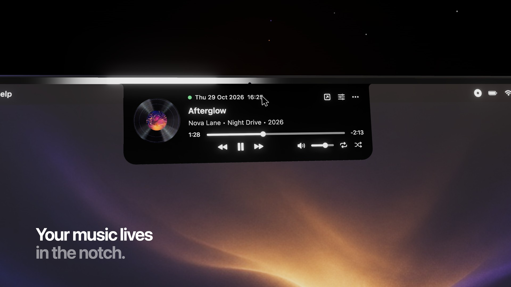
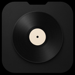
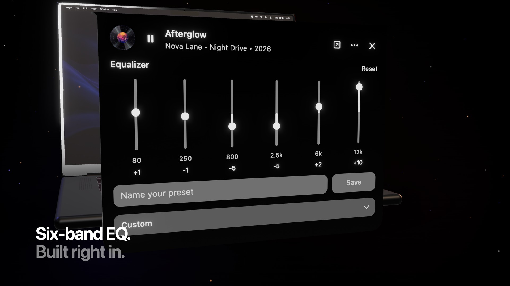
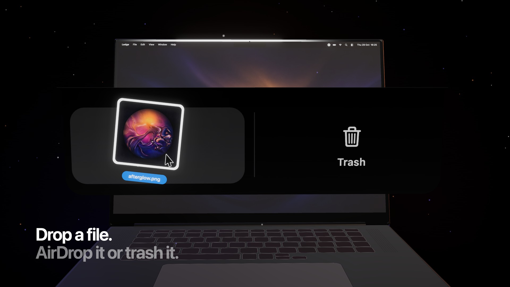
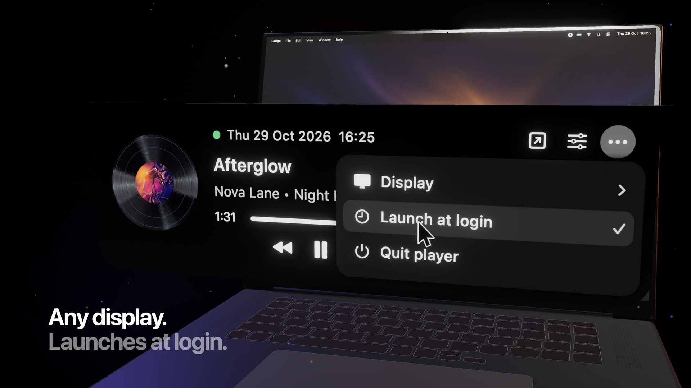

01
It hangs from the top edge.
The player is flush with the screen, not a floating card. Rest the pointer on it and the controls drop down. Move away and it tucks back into a small disc and a pause button.


LedgeFree for Mac
Ledge plays YouTube Music from the top of the screen. A vinyl, the track, and the buttons. The rest of the desktop stays yours.
01
The player is flush with the screen, not a floating card. Rest the pointer on it and the controls drop down. Move away and it tucks back into a small disc and a pause button.

02
The equalizer lives next to the menu. Name a setting, save it, and come back to it. Flat is one click away.

03
Drag something onto the notch and it splits in two. The left side sends the file with AirDrop. The right side moves it to the Trash.

04
Ledge stays on the monitor you pick. It can open when you log in. Camera area mode scrolls the track title through the small notch, for the space under the camera.

Version 1.0
Google Chrome is required. Ledge will not play without it. YouTube Music opens in its own Chrome window.
Download Ledge 1.0Zip, 1.4 MB. Menus are in Ukrainian.
Put Ledge in Applications. It does not need an installer.
macOS blocks apps that aren’t notarized. Control-click Ledge and choose Open, then Open again.
The first play opens YouTube Music in Google Chrome. Sign in there once, and the notch takes over.